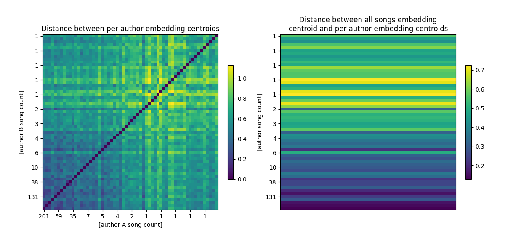

Embeddingi CLaMP
Cel
Celem tego eksperymentu jest weryfikacja, czy embeddingi utworów, wytworzone przez model uczenia maszynowego, mogą służyć za metryki.
Wykorzystane zasoby
Model CLaMP[2] w wersji
sander-wood/clamp-small-512. Silnie zmodyfikowany interfejs użytkownika:Zamiast formatu wejściowego MusicXML, używamy ABC (był on używany wewnątrz modelu),
Argumenty to wejściowy folder z plikami ABC i wyjściowy folder gdzie trafią pliki JSON,
Obsługiwanie wielu utworów na raz (batching),
Zapisywanie embeddingów utworów do plików JSON,
Usunięcie fragmentu.
Narzędzie do bezpośredniej zamiany formatu MIDI na format ABC midi2abc. Zamiana MIDI do MusicXML poprzez MusPy nie działała, ponieważ utwory ze zbioru Maestro miały zbyt krótkie nuty i konwerter nie był sobie w stanie z tym poradzić. Nie wiemy też, czy format pośredni zachowywał wszystkie informacje. Alternatywny konwerter pozwalał obsłużyć krótkie nuty, posiadał też bogatą paletę opcji, które nie były nam w pełni potrzebne. Jest też kilkakrotnie szybszy, bo stworzony został dokładnie do tego typu operacji.
Uruchomienie
Do tego eksperymentu wymagany jest Python w wersji 3.9.X, jest to narzucone przez kod użyty do modelu CLaMP.
Przetwarzanie zaczyna się od pobrania zbioru MAESTRO:
py -m setup_dataset maestro
Następnie należy go przekonwertować z formatu MIDI do ABC i przekazać do modelu:
py -3.9 -m notebooks.clamp.statistics
Formaty ABC i embeddingi zostaną zapisane równolegle ze zbiorem MAESTRO w folderze data.
Wyniki
W ramach eksperymentu każdy utwór ze zbioru Maestro został przetworzony do formatu ABC, a następnie przekazany do modelu, którego wyniki w postaci embeddingów zostały zapisane w plikach w formacie JSON.
Wariancja wewnątrz-grupowa
Obliczona została wariancja wartości embeddingów dla każdej grupy (wszystkie utwory, per autor). W celu ograniczenia informacji przedstawiamy tylko skrajne wartości wariancji każdej grupy.
Wysoka wariancja embeddingów świadczy o dużym zróżnicowaniu badanego zbioru utworów. Oczekujemy, że utwory bardziej do siebie zbliżone, np. pochodzące od tego samego autora, będą miały niższą wariancję.
Ograniczamy się do twórców z conajmniej 5 utworami, bo wariancja dla jednego elementu naturalnie dąży do wartości zerowej. Przed analizą wyniki zostały poddane normalizacji warstwowej, co jest bliższe podobieństwu cosinusowemu (na którym model znajduje podobieństwa utworów i tekstów) niż nieznormalizowane wyniki.
Informacja
Matematyka opisana w komentarzu tutaj: StackOverflow.
Group or author |
Songs |
Min variance |
Max variance |
|---|---|---|---|
Everyone |
1276 |
0.000144711 |
0.001036201 |
Frédéric Chopin |
201 |
0.000111078 |
0.001129670 |
Franz Schubert |
186 |
0.000123212 |
0.000989144 |
Ludwig van Beethoven |
146 |
0.000080254 |
0.001168862 |
Johann Sebastian Bach |
145 |
0.000089840 |
0.001427169 |
Franz Liszt |
131 |
0.000076927 |
0.000982589 |
Sergei Rachmaninoff |
59 |
0.000108146 |
0.001524104 |
Robert Schumann |
49 |
0.000064694 |
0.001090892 |
Claude Debussy |
45 |
0.000055400 |
0.001433067 |
Joseph Haydn |
40 |
0.000051574 |
0.001091413 |
Wolfgang Amadeus Mozart |
38 |
0.000053393 |
0.000916717 |
Alexander Scriabin |
35 |
0.000036396 |
0.000824718 |
Domenico Scarlatti |
31 |
0.000062661 |
0.001180399 |
Felix Mendelssohn |
28 |
0.000017502 |
0.000799530 |
Johannes Brahms |
26 |
0.000038023 |
0.001100190 |
Franz Schubert / Franz Liszt |
10 |
0.000041989 |
0.001269710 |
Isaac Albéniz |
7 |
0.000015711 |
0.004365234 |
Pyotr Ilyich Tchaikovsky / Mikhail Pletnev |
6 |
0.000003040 |
0.002428018 |
Pyotr Ilyich Tchaikovsky |
6 |
0.000006142 |
0.001510196 |
Muzio Clementi |
6 |
0.000003225 |
0.002749064 |
Modest Mussorgsky |
6 |
0.000001137 |
0.000197587 |
Nikolai Medtner |
5 |
0.000004015 |
0.001154195 |
Johann Sebastian Bach / Ferruccio Busoni |
5 |
0.000004529 |
0.000969362 |
George Frideric Handel |
5 |
0.000003260 |
0.001360255 |
César Franck |
5 |
0.000002675 |
0.001003469 |
Wariancja całej grupy jest punktem odniesienia. Twórcy o dużej ilości utworów mają wariancję zbliżoną wariancji grupy, czasami znacznie wyższą. Dla twórców o mniejszej ilości utworów wariancja z reguły maleje, co sugeruje, że utwory te są do siebie bardziej podobne. Warto zauważyć, że minimalna wariancja maleje znacznie szybciej od maksymalnej, może to być spowodowane tym, że mniejsi twórcy mieli jedną, bardzo specyficzną cechę zawartą w swoich utworach.
Grupowanie muzyki klasycznej po jej twórcach nie jest najlepszą metodą. Lepszy kontrast będzie można zobaczyć, kiedy porównywane grupy będą podzielone według metryk, np. tempo, gatunek, charakter (smutny czy wesoły).
Odległości między centroidami grup
Obliczone zostały centroidy dla każdej grupy (wszystkie utwory, i per autor).
Odległości pomiędzy wartościami średnimi embeddingów grup pozwalają określić na ile podobne są do siebie te grupy. Poniższe wykresy przedstawiają zestawienie ze sobą centroidy grup autorów, a następnie centroidy grup autorów z centroidem wszystkich utworów.

Na wykresie pierwszym widać, że autorzy o dużej twórczości mają bardzo zbliżone do siebie embeddingi, co świadczy o różnorodności ich utworów. Pojedyncze utwory naturalnie są od siebie dramatycznie różne. Najciekawsze porównanie uzyskujemy dla grup od 2 do 7 utworów, gdzie widać charakterystyczne linie pionowe i poziome (są one symetryczne względem przekątnej). Świadczą one o konsekwentnym (powtarzanym w kilku utworach) odstępstwie od norm.
Na wykresie drugim łatwo zauważyć, że autorzy z dużą twórczością znajdują się bliżej środka łączonej grupy. Jest to spowodowane tym, że mają w nią największy wkład. Największe odstępstwa występuje dla pojedynczych utworów, natomiast nie mają one dużego wkładu w łączoną średnią.
Dalsze eksperymenty
Analiza korelacji z istniejącymi metrykiami. Kosztowna czasowo, najlepiej dobrać specjalny zbiór do tych celów. Analogicznie trzeba też wybrać zbiór metryk. Wystąpienie korelacji będzie oznaczało, że wybrane wartości embeddingów, odpowiadają pewnym metrykom.
Analiza pomiędzy utworami różnych kategorii. Temat w sumie oklepany, na tym opierają się klasyfikatory.